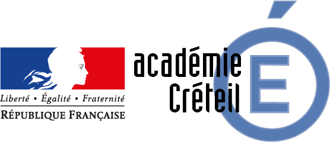

Formation
Ipssi Paris
Prépa Bachelor Informatique et Développement - 1ère Année

Curriculum Vitae
Email: Mehdimskpro@tutanota.com
Téléphone: +33 7 80 60 44 84
Github: https://github.com/msk-mdi
LinkedIn: https://www.linkedin.com/in/mehdi-msakni
Ipssi Paris
Prépa Bachelor Informatique et Développement - 1ère Année
Académie de Créteil - 2023
Académie de Créteil - 2019
Nabboo (Vacoa - Ginko - Navys)
Création d'un Entra ID Microsoft (anciennement Azure Active Directory)
Installation et/ou mise à niveau des PC en les connectant à l'Entra ID
Mise en place de GPO (politique) permettant d'augmenter la sécurité et la facilité d'utilisation pour les employés
Automatisation du processus d'installation des applications de base (Chrome, VLC, Antivirus) ainsi que la connexion aux périphériques externes (imprimantes)
Français 🇫🇷, Anglais 🇬🇧
SH, Bash, Zsh, PowerShell, CMD.
Python, C, C#, HTML5, CSS3, JavaScript, ReactJS, NodeJS, PHP 8.
Git, Vim, OpenSSH, VSCode, Visual Studio, Xcode, Android Studio, VirtualBox, Vmware, Qemu, UTM, Docker, Mistral AI.
Nmap, Netcat, Hashcat, John, Crunch, Gobuster, Dirbuster, Nikto, Wireshark, Burpsuite, Hydra, Suite Aircrack-ng, Metasploit, Cisco Packet Tracer.
Linux (Debian based, RHEL based, Arch Linux), MacOS, Windows, Windows Server 2022, FreeBSD (classique et Pfsense), OpenBSD.
Jeu de voiture et de survie en 3D fait sur Unity en utilisant le language C#.
Code source iciDéveloppement d'un site web en HTML CSS permettant de télécharger tous les lanceurs de jeux vidéos sur PC
Code source iciCréation d'un site web pour un restaurant fictif en ReactJS
Code source iciCréation d'une page d'inscription et de connexion ainsi que d'une gestion des permissions utilisateurs par un ou des admins en PHP en utilisant des fichiers CSV comme base de données
Code source iciCréation d'un site web en PHP permettant aux entreprises de créer des quiz pour des utilisateurs
Sur ce même site web, l'administrateur pouvait activer et désactiver des comptes, des quiz et pouvait modifier les permissions des utilisateurs sur le site.
Code source iciCréation d'un routeur Pfsense avec trois interfaces réseaux (WAN, LAN et DMZ) permettant la connectivité entre un réseau local (LAN) contenant des PC, une zone démilitarisée (DMZ) contenant des serveurs web et Internet (WAN)
Création de multiples réseaux composés de routeurs, switchs, serveurs et de PC avec Cisco Packet Tracer
- Pour les routeurs: Configuration des routeurs avec de multiples protocoles de routage tels que le routage statique, l'OSPF, le RIP ou encore l'HSRP
- Pour les switchs: Configuration des VLAN afin de segmenter le réseau et configuration du trunking sur ces VLAN
- Pour les serveurs: Création d'un serveur DHCP permettant d'attribuer dynamiquement des IP à un ou plusieurs réseaux présents dans l'infrastructure
- Pour les PC: Attribution des IP statiquement ou dynamiquement en utilisant le serveur DHCP
Installation et configuration de multiples serveurs comme Debian, Ubuntu, Fedora, Rocky Linux, ou encore Arch Linux a la fois en x86_64 mais aussi en aarch64
Hardening Linux en utilisant Arch Linux avec des partitions séparer et chiffré avec LUKS, une limitation des permissions root sur les utilisateurs
Hardening SSH ainsi que l'ajout de framework par dessus comme Fail2Ban
Configuration des firewall avec iptables mais aussi UFW
Installation et configuration d'un Windows Server 2022 avec un Active Directory et des GPO
Creation d'un proxy Squid et d'un reverse proxy Nginx avec un Load Balencing sur deux serveurs Apache
Creation d'une PKI avec un certificat root, des certificats intermediaires et des certificat CA attribuer aux serveurs pour avoir une connexion en HTTPS sécuriser et signé
Installation et configuration d'un serveur GLPI sur un serveur Debian et Arch Linux